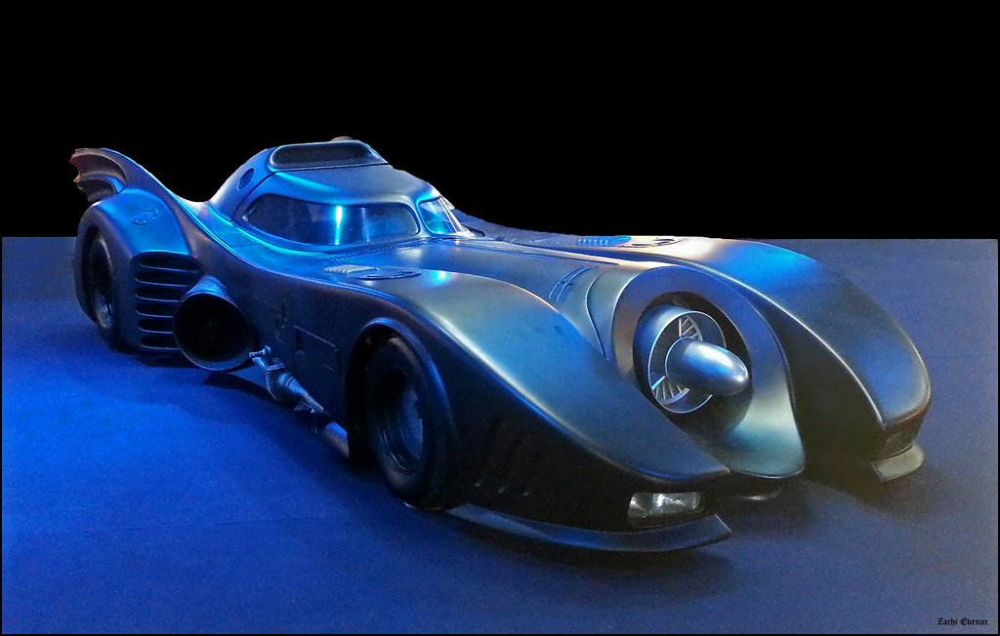

The hallway continues after the door. Interestingly, there is a moving walkway on it.
The walkway is moving toward you quite quickly. You're not sure if you can run fast enough to make it to the other side.
On the floor, you find a remote control toy Batmobile. Clearly, the murderer was expecting you to investigate the murder. On the bottom of the remote control, there is a message attached:
You have an idea. You drive the mini-Batmobile to the end of the walkway and back. It takes 9.2 seconds. You can use this to calculate the speed of the moving walkway to see if its safe to continue because you don't want to walk all the way back to get the necessary equipment to bypass this walkway.
